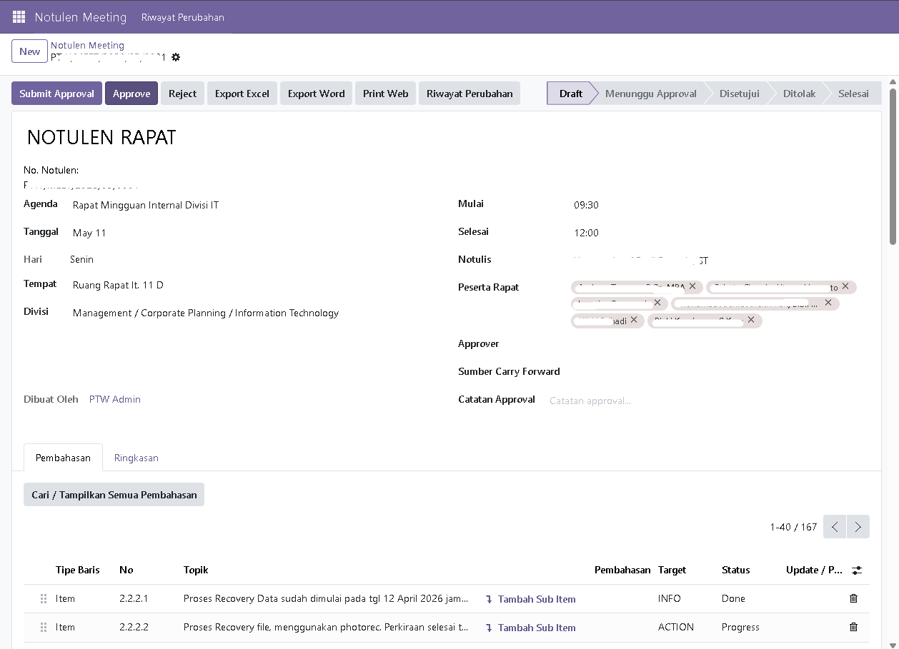
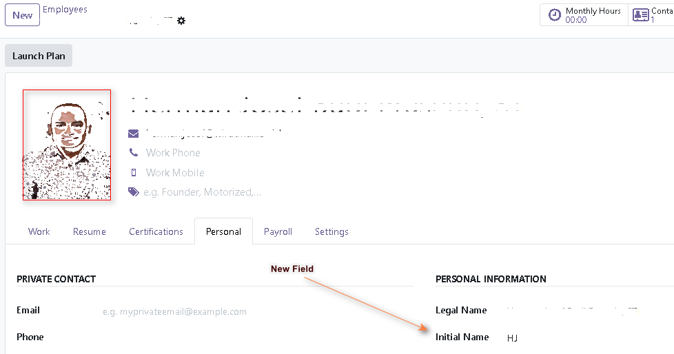
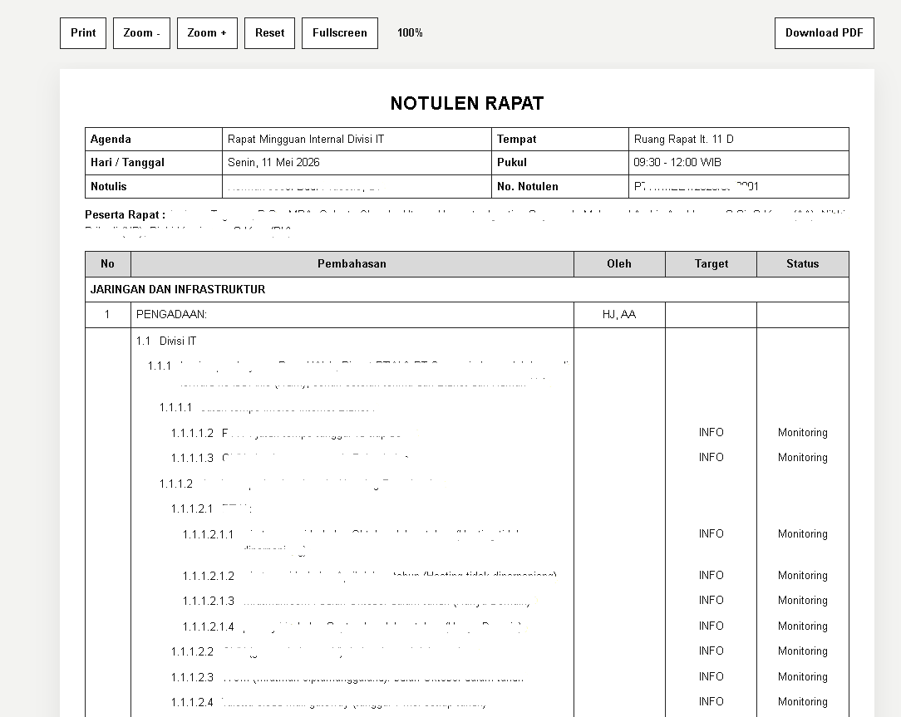
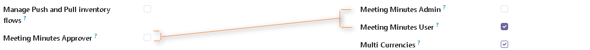
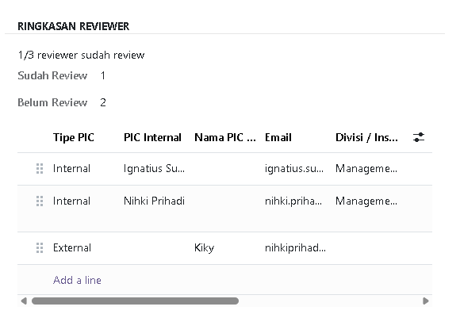
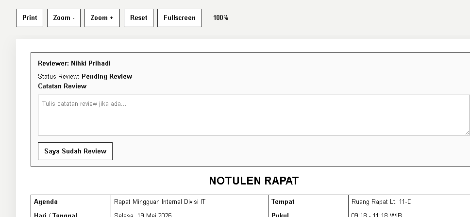
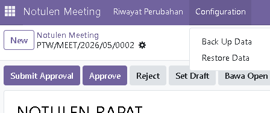
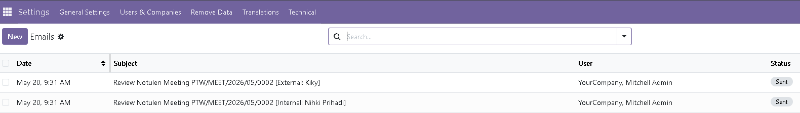

PTN Notulen Meeting membantu tim membuat notulen rapat yang rapi, terstruktur, dan mudah ditindaklanjuti. Modul ini mendukung pembahasan bertingkat, review lintas pihak, approval, carry forward meeting berikutnya, serta output siap presentasi ke Print Web, PDF, Word, dan Excel.
Dirancang untuk kebutuhan rapat internal maupun lintas pihak yang membutuhkan dokumentasi formal, monitoring progres, review sebelum approval, dan jejak perubahan yang mudah dibaca kembali pada meeting berikutnya.
Topik utama, sub-item, bullet, checklist update/note, dan tabel fleksibel bisa dicampur dalam satu notulen.
Akses dan approval dapat diatur untuk notulis, peserta, approver, reviewer internal, dan admin sesuai peran yang relevan.
Setiap item bisa dibandingkan dengan meeting sebelumnya untuk melihat status dan target yang berubah.
Tambahkan banyak PIC reviewer dari karyawan internal atau pihak eksternal, lengkap dengan status review dan catatan review.
Open item yang belum selesai dibawa ke meeting lanjutan tanpa kehilangan relasi parent-child.
View khusus untuk rapat/proyektor dengan zoom, fullscreen, print, dan download PDF.
Dokumen bisa dibagikan ke PDF, Word, dan Excel untuk dokumentasi, distribusi, atau arsip.
Backup dan restore data notulen memudahkan migrasi, pemindahan environment, atau pemulihan data.
Alur kerja dibuat sederhana agar tim bisa fokus pada isi rapat, review antar pihak, dan tindak lanjut, bukan pada administrasi dokumen.
Berikut beberapa tampilan utama yang menunjukkan bagaimana PTN Notulen Meeting dipakai dalam alur harian: input notulen, pengaturan user, review reviewer, backup/restore, hingga monitoring log email.







